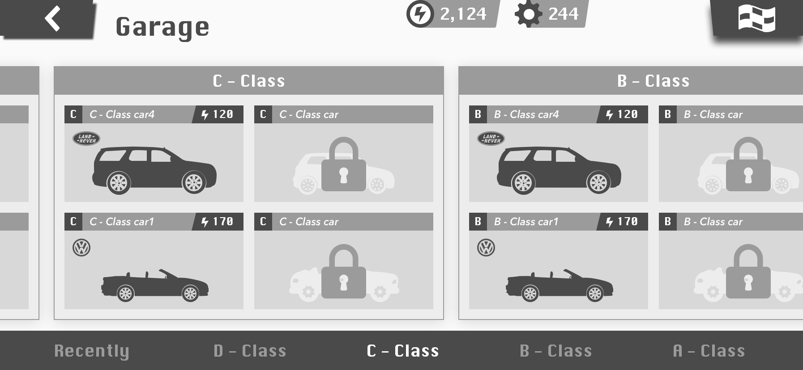

测试题答卷（汽车改装）
批改作业绝对不是个轻松的差事... 谢谢你看到这里，辛苦了。
下面的内容是针对测试题的一些最基础构思，它们仅仅是为了这次测试而设计。由于时间限制，里面仍有一些设计细节和想法没有被照顾和体现，很期待有机会能与你进一步讨论 ：）
TIP 1： 本页面采用了 APPLE prefers-color-scheme 的主题适配，您可以通过更改 IPhone 或 MAC 的系统外观来更换 明/暗 主题。
TIP 2： 本页面的图片已被制作为交错式 PNG，这意味着网页显示时，图片将从低质量图像开始逐步加载, 部分过于传统的浏览器版本可能无法支持这一特性，推荐使用较新的浏览器以获得更好的阅读体验。您还可以点击 这里 下载本答卷的 PDF 版本；
前言
测试内容是界面，为了能够让设计“说话”，我将尽可能尝试搭配极少的文字描述。另，关于这次的设计，有三点值得一提：
1. 设计尽可能遵从了 Apple HIG 与 Google Material Design 的底层实践；
2. 设计使用较高细腻度的 4px 网格系统以保证原型的几何韵律；
3. 由于暂不了解网易内部的设计话术，下方的文字描述风格将尽可能“直白”。
目录
一、车辆概览
二、车库
三、部件（拆解）
四、部件（升级）
五、部件（装备）
一、车辆概览
进入游戏，点击上次游戏最后“已选中”的车辆，进入「车辆概览页」。
改装按钮上的黄色标识表示库中有“新部件”。
二、车库
点击「车辆概览页」面中“中间的车辆”或“右上角的车辆图标”进入「车库页」。
1）首屏可看到最近使用的 6 台车；
2）通过右上角的旗帜可直接进入比赛（减少按返回按钮次数）；
3）底部导航可快速定位 最近/各类等级 的车辆；
暂未设计更多的排序方式，是因为有更多的科学考量，在这里暂且不叙。

👇 例：通过底部导航快速定位、查看车库中的 C 类车。

三、部件（拆解）
点击「车辆概览页」右下角的“REFIT（装配）”按钮，进入「装配页」；
👇 在「装配页」中，底部为部件类型，选择不同部件，页面的汽车将展示出不同部件的位置；
1）黑色 E：已装备的部件（滚动置顶）；
2）灰色 E：部件已经被其他车辆装备；
3）黄色 N：如果库中有“新部件”，则直接跳转到该部件（例子为获得了一个新的发动机，所以直接跳转到发动机的分类，黄色的标识为“新部件位置”的视觉路径）；
4）将“车辆涂装部件”放在部件分类的第一位，有两个考虑：一是它可能会常用，二是将它有别与其他部件，没有升级、降级等属性选项，是一种需要单独设计的部件选择风格，该页面原型需要单独制作；

👇 查看某个部件详情，可直接看到与当前装备的属性对比，可执行三个操作：拆解、升级、装备。

👇 点击 DIGEST（拆解）按钮。
1）遮盖部分背景，让用户更加专注于当前的操作，但这一步操作关乎于“零件”的数量，它不应该被遮蔽。
2）弹性的零件数可能更会让玩家上瘾；

👇 如果拆解的零件等级较高，确认操作必不可少。

四、部件（升级）
未达到满级的装备可进行升级。
遮盖部分背景，让用户更加专注于当前的操作，但这一步操作关乎于“货币 & 零件”的数量，它不应该被遮蔽。

五、部件（装备）
以前面的那个新装备为例，点击“EQUIP（装备）”按钮后，装备完成。这时“TEST DRIVE 试驾按钮”的显示优先级被提高；

👇 如果要装备其他车辆的装备，则需要先将其卸下后才可执行进一步操作。
1）针对满级装备进行了“展示激励”，让它有一种区别于未满级装备的“高级感”；
2）这时，“TEST DRIVE 试驾按钮”被设置为“DISABLE 状态”；
3）属性“OVERLOAD（溢出）”。